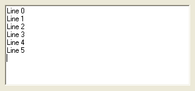

EditorGadget()
Syntax
Result = EditorGadget(#Gadget, x, y, Width, Height [, Flags])Description
Creates an Editor gadget in the current GadgetList.
Parameters
#Gadget A number to identify the new gadget. #PB_Any can be used to auto-generate this number. x, y, Width, Height The position and dimensions of the new gadget. Flags (optional) Flags to modify the gadget behavior. This can be the following value: #PB_Editor_ReadOnly: the user cannot edit the text in the gadget. #PB_Editor_WordWrap: the lines too long to be displayed will be wrapped still displayed completely
Return value
Returns nonzero on success and zero on failure. If #PB_Any was used as the #Gadget parameter then the return-value is the auto-generated gadget number on success.
Remarks
A 'mini help' can be added to this gadget using GadgetToolTip().
The following events are supported through EventType():#PB_EventType_Change : the text has been modified by the user. #PB_EventType_Focus : the editor has got the focus. #PB_EventType_LostFocus: the editor has lost the focus.The following functions can be used to act on the editor content:
- AddGadgetItem(): Add a text line.
- CountGadgetItems(): Return the number of lines in the editor gadget.
- GetGadgetItemText(): Get the specified line text.
- GetGadgetText(): Get the text content of the editor gadget. Please note, that several lines of text are separated with "Chr(13)+Chr(10)" on Windows and "Chr(10)" on Linux and OS X.
- RemoveGadgetItem(): Remove a line in the editor.
- ClearGadgetItems(): Clear the text content.
- SetGadgetItemText(): Set the specified line text.
- SetGadgetText(): Change the text content of the editor gadget.
- SetGadgetAttribute(): With the following attribute:#PB_Editor_ReadOnly: set the read-only state (zero means editable, nonzero means read-only). #PB_Editor_WordWrap: set the word-wrap state- GetGadgetAttribute(): With the following attribute:#PB_Editor_ReadOnly: get the read-only state (zero means editable, nonzero means read-only). #PB_Editor_WordWrap: get the word-wrap state
This gadget supports the SetGadgetColor() and GetGadgetColor() functions with the following values as 'ColorType':#PB_Gadget_BackColor : backgroundcolor (not supported on MacOSX) #PB_Gadget_FrontColor : textcolor
Example
If OpenWindow(0, 0, 0, 322, 150, "EditorGadget", #PB_Window_SystemMenu | #PB_Window_ScreenCentered) EditorGadget(0, 8, 8, 306, 133) For a = 0 To 5 AddGadgetItem(0, a, "Line "+Str(a)) Next Repeat : Until WaitWindowEvent() = #PB_Event_CloseWindow EndIf

See Also
AddGadgetItem(), RemoveGadgetItem(), CountGadgetItems(), ClearGadgetItems(), GetGadgetText(), SetGadgetText(), GetGadgetItemText(), SetGadgetItemText(), GetGadgetAttribute(), SetGadgetAttribute(), GetGadgetColor(), SetGadgetColor(), StringGadget()
Supported OS
All